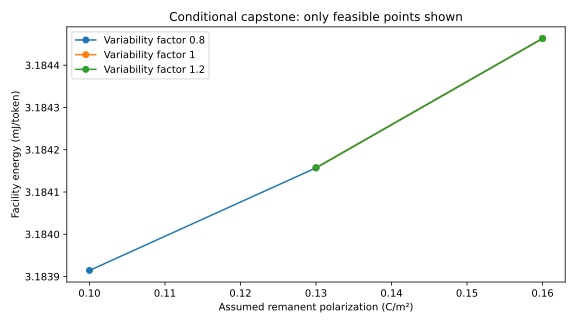

Capstone · Synthesis · 12–18 hours
Defend a cross-stack claim
Can a larger ferroelectric read window improve useful AI work under fixed capacity, quality, latency, and power constraints?
A cross-stack claim needs a sequence of compatible questions
Suppose a materials experiment improves a measured memory window. A system claim requires several additional steps: does the improvement survive the read protocol, reduce errors across a population of cells, permit a different array organization, and change an operation the workload actually performs? “Cross-stack” means following those relationships across the material, device, circuit, architecture, software, and facility levels.
A comparison contract states what remains fixed. For example, comparing two memories at the same usable capacity and target error rate answers a different question from comparing their maximum raw densities. Comparing energy at the same output quality and latency answers a different question from allowing slower or less accurate results. The contract prevents an apparent improvement from coming only from relaxing the task.
The capstone uses hypothetical numerical couplings to make this reasoning executable. A coupling is a specified relationship by which one level affects another, such as an assumed relationship between polarization and read-window separation. It is not made experimentally valid by its usefulness in a calculation. We will keep measured facts, derived consequences, and teaching assumptions separate while identifying which missing measurement would most change the engineering decision.
Prerequisites: all ten chapters and their executable projects. Objectives: construct an evidence-aware intervention, compare fixed architecture with reselection, solve a requirement backward, quantify sensitivity, and write a defensible research recommendation.
11.1 Freeze the comparison contract
We hold capacity at 64 MiB; workload at 16 million one-byte parameters, 16 layers, four query and KV heads, dimension 64, two-byte KV elements, batch 16, and context 128; compute at 1 TFLOP/s; interface bandwidth at at most 80 GB/s; utilization at 0.7; assumed baseline IT power at 45 W; and PUE at 1.2. Numerical quality is assumed adequate and unchanged. This is a hypothetical workload, not a benchmark of an existing model.
Array constraints remain read latency at most 15 ns, area at most 30 mm², and raw error probability at most $10^{-3}$. The system's modeled mean batch response must remain at most 5 ms. Raw error feasibility here is a pedagogical constraint, not proof of an acceptable residual error rate after ECC. The independent-error ECC lesson cannot validate correlated array failures.
Fixed context matters. Chapter 9's broad sweep compares several contexts for exploration. Its shortest-context optimum cannot fairly be called a speedup over a longer-context task. Here the context and batch are held fixed, so changes in results have a narrower interpretation.
11.2 Make each transition inspectable
| Transition | Relationship and units | Evidence and missing measurement |
|---|---|---|
| Processing → remanent polarization | Intervention explores $P_r=0.08,0.10,0.13,0.16$ C/m². | Teaching choices, not a deposition recipe. Measure phase, switchable charge, leakage, history, temperature, and sample variability. |
| Polarization → effective read window | $\Delta V=k_P P_r$, $k_P=0.4/0.13$ V/(C/m²). | Assumed coupling. A real FeFET needs self-consistent screening, trapping, channel capacitance, and read extraction. Obtain matched PUND and transfer curves. |
| Window → raw error | $p=\tfrac12\operatorname{erfc}[\Delta V/(2\sqrt2\sigma)]$, equal Gaussian states. | Derived under assumptions. Measure distribution tails, unequal priors, correlations, retention drift, and reference error. |
| Array geometry → latency, energy, area | Reuse Chapter 5's finite model. Scale its device-energy term of 0.02 times interface width (in pJ) by $(P_r/0.13)^2$; leave other terms fixed. | Synthetic sensitivity law. No dynamic law is inferred from the static Preisach curve. Characterized drivers, wires, and switching pulses are missing. |
| Array → workload | Bandwidth is capped at 80 GB/s; memory energy is in pJ/byte; capacity remains 64 MiB. | Explicit cumulative interface. Sustainable parallel-bank traffic and real workload traces would be required. |
| Workload → facility | Use measured-in-code traffic/operation counts and assumed energy coefficients; $e_f=1.2(45/r+e_d)$. | Teaching budget. A physical power trace, serving distribution, and measured PUE boundary are missing. |
The quadratic device-energy scaling is an assumed penalty model: it makes larger polarization potentially costlier while improving read separation. It is not the loop-loss law from Chapter 3, whose fixed-coercive-field major-loop energy is linear in polarization. They describe different hypothetical operations. Keeping their purposes separate prevents an unjustified physical identity.
11.3 Follow the intervention upward
At the baseline, 32 banks and a 256-bit interface give 64 local rows. The assumed state-distribution width is $\sigma=0.05+0.00005(64)=0.0532$ V. At $P_r=0.13$ C/m², the window is 0.4 V and modeled raw error is about $8.52\times10^{-5}$, which satisfies the pedagogical bound. Read energy is 5.208 pJ/byte. The interface, not the larger internal-bank bandwidth estimate, sets the workload bandwidth.
At $P_r=0.10$ C/m², the assumed window falls to about 0.30769 V. The nominal-variability point fails the error constraint. It becomes feasible if the assumed standard deviation is 20% smaller, giving raw error about $1.50\times10^{-4}$. Thus a seemingly unfavorable polarization change can be acceptable if distribution control improves. Conversely, a larger mean window can be insufficient if tails or correlations worsen.
Under that reduced-variability scenario, energy falls from 5.208 to about 5.14267 pJ/byte. The workload step time remains 0.6394304 ms because the modeled bandwidth and compute limits do not change. Facility energy falls only from 3.184157 to 3.183914 mJ/token. This extremely small saving is a computed consequence of the chosen budget, not a measurement. Its precision is useful for checking the code; its physical significance is limited by the much larger uncertainty in assumed parameters.
Increasing polarization can improve the modeled error margin while increasing the assumed switching-related energy term. The correct optimum depends on the required reliability and uncertainty tolerance. Maximizing polarization without a constraint model is not a system objective.

11.4 Solve the reliability requirement backward
Let $Q(z)$ be the upper tail of a unit normal distribution. The equal-state Gaussian model gives $p=Q(\Delta V/(2\sigma))$. For target $p\le10^{-3}$, the inverse normal tail gives $z\ge3.090232$. Thus $\Delta V\ge2(3.090232)\sigma$.
At nominal $\sigma=0.0532$ V, required window is 0.3288007 V. Under the assumed coupling, this becomes $P_r\ge0.1068602$ C/m². That last statement is conditional on the unmeasured coupling law. The robust experimental specification is initially the required read-window distribution at the chosen bias, delay, temperature, endurance state, and error criterion. Only a validated device model can translate it into a process-level polarization target.
If standard deviation increases by 20%, the required window and polarization both increase by 20% in this model. The resulting polarization threshold is about 0.1282323 C/m². A baseline of 0.13 now has much less margin. This is why uncertainty must be propagated before selecting a nominal optimum.
Now work backward from the facility target. Chapter 10 showed that 2 mJ/token is impossible at the selected throughput and 45 W baseline even if dynamic memory and arithmetic cost zero. No adjustment of $P_r$ within this fixed architecture can satisfy that target. This is a useful negative result: it directs effort toward baseline power, feasible throughput, workload design, or architecture instead of over-optimizing a nonbinding device term.
11.5 Compare architecture reselection honestly
The script evaluates both the fixed 32-bank, 256-bit organization and all 24 organizations from Chapter 5 after each intervention. Reselection minimizes energy per byte subject to the same array constraints. This is a global optimum over the enumerated finite choices, not all possible arrays. In these scenarios, reselection frequently returns the same organization or finds no feasible alternative. An optimizer is not required to discover a new architecture merely because redesign was allowed.
A more substantial redesign might move computation into memory, change storage/working-memory roles, introduce a different sensing scheme, or alter batching. Each adds costs and evidence requirements. You cannot claim the 63% hypothetical redesign energy reduction in Chapter 10 merely by renaming this array sweep “compute-in-memory.” It requires a new energy decomposition with converters, control, useful numerical quality, and actual workload coverage.
The digital controller is a concrete teaching implementation of request acceptance, memory command completion, and faults. Its latency is in abstract cycles, with no calibrated connection to the analog switching time. The SPICE cell demonstrates an assumed state equation and read distinction. The LEF/GDS views define an abstract geometry. These artifacts test different interfaces; they are not a unified post-layout mixed-signal simulation. A credible next implementation would first characterize a device and macro, then connect analog timing to controller timing and physical extraction.
11.6 Execute and interpret
python -X utf8 projects/polarization.py python -X utf8 projects/stack.py all python -X utf8 projects/capstone.py
Inspect all 24 conditional scenarios. The code keeps infeasible rows instead of silently discarding failures. It checks that the capstone baseline matches the earlier workload exactly. Parameter uncertainty is explored through standard-deviation factors 0.8, 1.0, and 1.2; these are sensitivity scenarios, not measured confidence bounds.
Learner tasks: add a fixed context of 512 and optimize batch only within that context; add a measured distribution when one becomes legally available; replace the assumed coupling with a calibrated electrostatic/trap model; and test whether a lower interface ceiling removes every throughput benefit. Preserve a baseline before each change. If parameters come from another material stack, create a separate case instead of merging them into the original device.
11.7 Read a new paper as a falsifiable proposition
Use the September 2026 interfacial-charge preprint or agentic-TCAD preprint. First identify publication status and version. Write the claimed intervention, observable, comparison group, conditions, uncertainty, and alternative explanation. Then name the nearest course model and ask which parameter the paper actually constrains. An internal-field estimate does not directly set retention or facility energy. A better TCAD fit does not establish unique microscopic causation.
For the agentic study, distinguish the proprietary simulator, chosen physical model, fitted parameter values, held-out bias/geometry tests, and agent workflow. The authors' reported improvement is evidence about their experiment. It is not a reproduced result until the complete data, configurations, solver version, and workflow are executed independently. A useful next project would compare agent-selected and expert-selected model families on the same blinded conditions.
11.8 Write the cross-stack claim as a causal model
The running intervention changes an assumed remanent polarization while leaving several other quantities fixed. That is a controlled mathematical experiment, not necessarily an available fabrication intervention. In a real film, changing anneal, oxidant, electrode, or composition may change polarization, traps, leakage, variability, and endurance together. A causal claim about processing therefore requires the joint response of those properties. Varying only one number is useful for sensitivity analysis but cannot establish that a process can realize the isolated change.
Let $u$ denote a process choice, $m$ a vector of material properties, $d$ device observables, $a$ array service metrics, and $y$ workload/system outcomes. A composed model has $m=f_m(u)$, $d=f_d(m,c_d)$, $a=f_a(d,c_a)$, and $y=f_y(a,c_y)$, where each $c$ collects held-fixed conditions at that level. The functions need not be known exactly. The point of writing them separately is to expose which transition is measured, fitted, derived, or assumed.
For a differentiable scalar path, the chain rule gives $dy/du=(dy/da)(da/dd)(dd/dm)(dm/du)$. In a vector model these factors are Jacobian matrices. Their units must multiply consistently: volts per polarization times polarization per process-unit, for example, gives volts per process-unit. A dimensionless percentage improvement cannot be passed through an unrelated derivative without restoring the baseline scale. The weakest-supported transition often dominates the uncertainty in the final claim.
The chain rule also explains why an excellent materials result can have nearly zero local system value. If the workload is capped by an unchanged interface, its throughput derivative with respect to additional internal array bandwidth is zero. If facility power is dominated by an unchanged baseline, its relative energy sensitivity to a small cell-energy term is small. These are properties of the architecture and operating point, not judgments that the material is uninteresting.
11.9 Feasibility boundaries make linear sensitivity unreliable
The capstone includes hard constraints, so its response is not globally smooth. A small read-window decrease can cross the raw-error limit and remove a candidate entirely. An array that is marginally best can be replaced by a different organization after a parameter change. The resulting optimum is a piecewise function with switches between candidates. Differentiating one selected candidate while assuming it remains optimal misses those changes.
Separate three questions. First, how does a fixed architecture respond within its feasible region? Second, where does that architecture become infeasible? Third, what alternative architecture becomes best under the same contract? The script already records fixed and reselected cases and retains infeasible rows. The expanded interpretation adds the distinction between a small derivative and a large discrete consequence. A parameter with negligible energy sensitivity can still be critical because it controls feasibility.
The Gaussian read margin is such a parameter. At nominal conditions, lowering polarization modestly reduces the assumed energy term, but crossing the required window invalidates the design. There is no meaningful energy optimum on the forbidden side unless the specification changes. Penalizing error with an arbitrary weight can hide that violation by trading catastrophic reliability against a small energy benefit. A hard constraint preserves the engineering meaning of the target.
Capacity creates another threshold. The batch-16 workload fits at context 128, but its ideal context ceiling is only 162 positions under the current memory budget. A proposal that increases usable capacity may have little effect before that boundary and a large effect after it by avoiding offload or reducing batch shrinkage. The value of capacity is therefore workload-distribution dependent. A single fixed-context energy derivative cannot summarize it.
11.10 Propagate two uncertainties together
The original sensitivity grid varied distribution width while holding polarization-to-window coupling fixed. Now let $k_P$ be uncertain as well. Assume, for a robustness exercise, that $k_P$ lies between 80% and 120% of its nominal value, and standard deviation $\sigma$ lies between 80% and 120% of its nominal value. These bounds are deliberately assumed ranges, not measured confidence intervals. Requiring feasibility for every combination in this rectangular uncertainty set gives a stronger question than checking one nominal point.
Under $W=k_PP_r$ and Gaussian target $p_*$, the constraint is $k_PP_r\ge2z_*\sigma$. The most demanding corner has the smallest coupling and largest standard deviation. Thus
The new robustness calculation gives required polarization 0.16029035 C/m², versus nominal 0.10686023 C/m². None of the original tested values up to 0.16 C/m² satisfies this stronger box-robust requirement exactly. The gap is small numerically, but rounding 0.16029 down to 0.16 would silently turn an infeasible point into a feasible one. A constraint should be checked at full computational precision and reported with appropriate physical uncertainty.
This result does not prove that the real technology is infeasible. The uncertainty box may include combinations no process can realize, and the coupling law itself is uncalibrated. It proves that the selected mathematical guarantee does not follow for the current candidates. Possible responses are to measure the joint parameter distribution, reduce variability, improve sensing, alter the architecture, or change the contract explicitly. Choosing the optimistic corner is not a robustness analysis.
Correlations between uncertain parameters matter in two different ways. A process may jointly raise polarization and variability, changing which parameter combinations are physically possible. Separately, errors among bits may be correlated even after the process parameters are fixed, changing ECC performance. The beta-binomial example in Chapter 6 concerns the latter. Conflating these two uses of correlation can produce a sophisticated-looking uncertainty calculation that still models the wrong event.
11.11 Tighten the service contract and track what breaks
The original capstone uses a 5 ms mean batch-response limit. Chapter 10 now derives the corresponding M/M/1 tail and shows that utilization 0.7 gives p99 response around 9.816 ms. If the intended service target is instead p99 below 5 ms, the original operating point is invalid under that queue model. The maximum continuous utilization falls to 0.411063, and the original discrete grid selects 0.3. This is a changed requirement, not a numerical correction to the earlier mean calculation.
Lower utilization raises baseline energy per useful token because the same assumed 45 W is amortized over fewer tokens. The materials-energy effect becomes even less consequential in relative terms. A redesign that reduces service variability may then be more valuable than a small reduction in read energy. The comparison illustrates the purpose of downward reasoning: service requirements can identify a different research priority from the one suggested by the most visible device metric.
Similarly, imposing a long continuation requirement reveals the workload's capacity limit. The fixed 128-token snapshot cannot represent a request that generates hundreds more tokens without changing memory use. A valid expanded capstone would simulate the evolving context, admission policy, and batch composition, then count useful completed requests at fixed quality. The present project remains a transparent snapshot model, and the new chapter makes the next required model explicit.
11.12 Read three research contributions at their actual evidence level
A constitutive-model paper: what was reproduced?
The 2021 parameter-extraction paper's Figure 2 supplies a synthetic parameter set. Our major-loop implementation reproduces the equations, remanent values, displacement zero-crossing bias, and loop-energy integral for that construction. The fit exercise then adds our own seeded noise. This supports a claim of equation reconstruction and numerical inference demonstration. It does not reproduce measured device data, the full extraction workflow for every source sample, arbitrary minor loops, or lifetime behavior.
A scientifically useful extension would obtain a legally available measured dataset with its calibration, area, thickness, waveform, and noise information. Fit only part of its protocols and predict a withheld protocol. Compare the residuals with an alternative model that includes different leakage or history assumptions. The result would move from synthetic algorithm checking toward calibrated reconstruction, provided the data and model are tied to the same device. A visually similar plot alone is insufficient to cross that evidence boundary.
A materials-mechanism paper: which alternatives were challenged?
The September 2026 interfacial-charge preprint combines electrical reversal measurements, chemical characterization, and modeling to interpret changes in a laminated stack. Its importance for this course is the coupling between interfaces and apparent switching behavior. When reading it, distinguish directly observed spectra and electrical curves from inferred defect populations and internal fields. The inference can be well supported without being a direct measurement of every microscopic variable.
A follow-up experiment should make a competing explanation predict a different outcome. For example, change read delay or temperature while preserving the programming protocol, or compare a control stack that changes electrostatic screening differently from chemical exchange. Merely repeating the improved-window measurement more precisely does not necessarily distinguish mechanisms. The most informative next observation is the one on which plausible models disagree, subject to measurement cost and process feasibility.
An AI-assisted modeling paper: what did the agent add?
The agentic TCAD preprint, version 2 reports a calibrated oxide-transistor model and tests across additional bias and geometry conditions. The language-model agent proposes or orchestrates model updates; Sentaurus supplies the physical simulation. The paper's reported objective improvement and withheld-condition errors are authors' results. We have verified the source and analyzed the method, but have not independently rerun its proprietary workflow.
To evaluate the agent's contribution, compare it with a fixed optimizer and an expert-guided process using the same starting information, parameter bounds, simulator budget, and withheld tests. Count failed proposals and total computational cost, not only accepted updates. Separate improvements from adding a better physical model from improvements in searching parameters within an unchanged model. The scientifically interesting question is whether the workflow makes model development more effective and transferable, not whether an agent can produce a lower training residual by any means.
11.13 Choose the next measurement by its decision value
A measurement has high decision value when its possible outcomes would change the engineering recommendation. In the current chain, further refining the static synthetic loop integral has little value for the facility-energy conclusion. Measuring the polarization-to-window relationship and its variation on the same devices has much greater value because it determines read feasibility. Measuring whole-access energy matters before assigning the cell a meaningful fraction of the system budget.
Construct a decision table before collecting data. One outcome may show that window gain survives long read delay with unchanged variability; another may show that the gain is transient trapping or broadens the tails. The first supports further array work; the second redirects effort toward interface stabilization or sensing. A useful experiment need not confirm the initial hypothesis. It should narrow the set of plausible engineering actions.
For a paired device study, record sample identities, geometry, process split, initial conditioning, pulse waveforms, delay, temperature, current compliance, and measurement calibration. Preserve failed devices and excluded observations with reasons. Fit a model on a declared subset and freeze it before testing new conditions. Report both absolute error and whether the predicted design decision changes. A 10 mV model error can be negligible far from a margin and decisive near it.
The weekly source monitor can identify new records or revisions, but cannot automatically promote a metadata discovery into course evidence. A new paper first needs identity and version checks, acquisition status, and a claim-level reading. Then determine whether it changes a parameter, a mechanism, or an evidence boundary. The public course remains a dated reviewed edition; the local monitor is a source-discovery aid rather than automatic scientific validation.
11.14 Write a conclusion that survives an adversarial reading
A defensible report begins with the decision and its conditions. For this project: under the synthetic fixed-architecture model, read-margin feasibility is sensitive to polarization coupling and variability, while facility energy is dominated by assumed baseline power. The available source set does not supply a calibrated end-to-end device-to-facility prediction. That conclusion is informative because it separates a potentially binding research requirement from a currently nonbinding energy term.
Then state the reproduced result, the unmeasured transitions, and the strongest counterexample. The reproduced static loop does not identify dynamics. A mean error does not determine correlated protected-word failures. A mean latency constraint does not establish p99. A short-context snapshot does not establish long-request capacity. These counterexamples are not generic disclaimers; each points to a specific equation or experiment that can change the conclusion.
Finish the technical argument with a next experiment and a stopping criterion. For example, paired polarization and read-window distributions could validate or reject the assumed coupling. If the resulting robust margin cannot meet the array target within allowed programming stress, stop optimizing the current architecture and investigate a different sensing scheme. If it does meet the target, characterize full-access energy and physical timing before claiming a workload benefit. This makes research progress measurable even when the hoped-for device gain does not survive the full stack.
1. Distinguish robust infeasibility from real-world impossibility
The uncertainty-box calculation requires 0.16029035 C/m², above every tested candidate. What exactly has failed?
Solution. No candidate meets the declared Gaussian-margin constraint for every combination in the assumed uncertainty box. This is a statement about the model, candidate set, and guarantee. It is not a proof that no physical device or architecture can work. Measure whether the worst-case combinations are possible, expand justified design choices, or change the specification transparently. Rounding the threshold or deleting the worst corner would conceal the failed guarantee.
2. Identify a parameter with small energy sensitivity but high decision value
Why prioritize measuring the read-window coupling when facility energy barely changes across feasible polarization values?
Solution. The coupling controls whether an architecture meets its error constraint. A small change can remove it from the feasible set even when energy varies negligibly within that set. Sensitivity of a continuous objective and sensitivity of the feasible decision are different. Measuring a parameter only because it has the largest local energy derivative would miss this boundary.
3. Design a fair comparison of agentic and conventional calibration
What must remain fixed, and what should be scored?
Solution. Fix measured training data, initial device information, simulator version, allowable model families and parameter bounds, computational budget, and unseen validation conditions. Score predictive error by condition, invalid or nonconvergent proposals, total simulations and elapsed cost, and whether the resulting model supports the correct design decision. Repeat where stochastic choices matter. A lower residual on a hand-selected successful run is insufficient to establish a generally better calibration method.
11.15 Reproduce the chain and preserve the comparison
Run the experiments in dependency order. The polarization exercise produces an independently scoped static result. The stack stages generate the selected array, workload, and system scenario. The capstone imports those outputs and checks that its nominal point reproduces the earlier workload. The depth laboratory adds electrostatics, domain-wall integration, experimental-design conditioning, continuous switching constraints, correlated errors, controller-reference enumeration, thermal coupling, fixed-context batching, queue tails, and robust margins. These checks deliberately test different failure modes rather than merely repeat one formula in several files.
python projects/polarization.py
python projects/stack.py all
python projects/capstone.py
python projects/depth_lab.pyWhen changing an upstream input, rerun every downstream stage that consumes it. A modified array energy with an old workload result creates an internally inconsistent report even if each file is individually valid. Preserve the previous result with its inputs, then compare scenario records by their declared conditions. A filename alone is not a scenario identifier. Geometry, units, source version, pulse history, workload, and service criterion determine whether two results are comparable.
For each reported improvement, write a short counterfactual: what is unchanged, what changes, and which equation carries the effect? If a changed process also changes variability, include both changes or mark the isolated intervention hypothetical. If a new memory enables larger batch, report the batch change as part of a redesign and retain a fixed-batch comparison. If a latency target changes from mean to p99, rerun feasibility rather than presenting the new operating point as a direct like-for-like result.
The engineering demonstrations remain separate validation tracks. The SPICE check verifies the stated constitutive and dynamic teaching circuits. The RTL and gate simulations verify selected protocol behavior. Geometry checks verify abstract file structure and containment. None supplies a missing calibrated link between analog pulse timing and digital cycles. A future mixed-signal implementation would need that interface explicitly, along with physical extraction and characterized operating corners.
4. Detect a stale downstream result
You double the per-bank energy coefficient and obtain a different selected array, but the facility report remains byte-for-byte unchanged. Is that evidence the system is insensitive?
Solution. First verify that workload and system stages were rerun and imported the new array result. An unchanged report can mean genuine insensitivity, rounding, a nonbinding term, or stale inputs. Compare the imported energy-per-byte value, selected organization, traffic, and dynamic-energy subtotal before interpreting the final metric. Reproducibility requires a coherent dependency chain, not just executable files.
11.16 Complete solutions and assessment rubric
5. Is the capstone a prediction of Khan's device?
Solution. No. It is a conditional sensitivity analysis with explicit synthetic couplings. Published equations support the static branch exercise, but measured timing, window coupling, distribution tails, and full-access energy are unavailable for the same chosen stack. The valid claim is what follows if the stated assumptions hold.
6. Can a more efficient array violate reliability?
Solution. Yes. Lowering polarization reduces the assumed energy term but shrinks read separation. The nominal 0.10 C/m² point is rejected. Optimizing energy without the error constraint gives a physically incomplete answer.
7. What is the first missing experiment?
Solution. For this chain, acquire paired polarization and transfer-state distributions on the same devices with geometry, pulse history, read delay, temperature, and leakage separation. That tests the assumed polarization-to-window coupling and variance. For switching-energy claims, also measure terminal voltage and current during complete write operations, including drivers and recovery, and integrate their product over the stated boundary.
8. What evidence would justify deployment language?
Solution. A verified product or system disclosure identifying the device's actual role, along with credible implementation evidence. Coauthorship, corporate affiliation, a simulator partnership, a patent application, and a proposed architecture do not establish deployment.
A successful final report names the device and version; reproduces a supported result; states every assumption crossing an evidence gap; holds the comparison contract fixed; reports failed constraints; distinguishes local and finite-global optima; and gives a measurement plan that could change the conclusion. Grade the reasoning and reproducibility before the size of the projected gain.